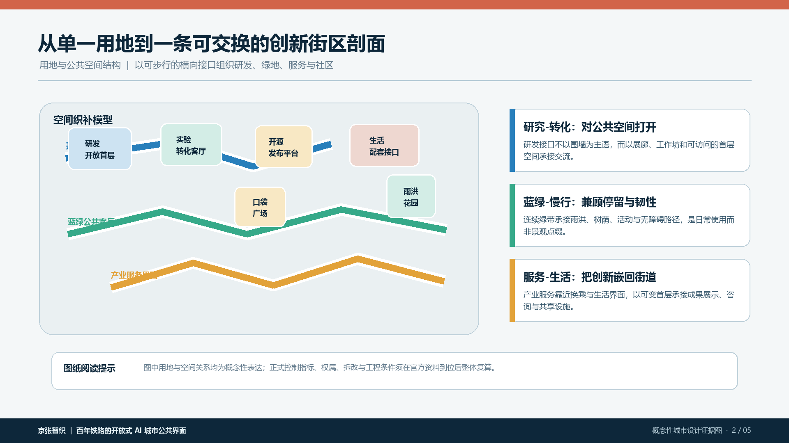
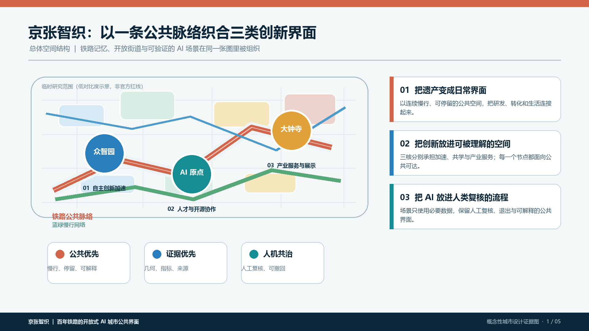
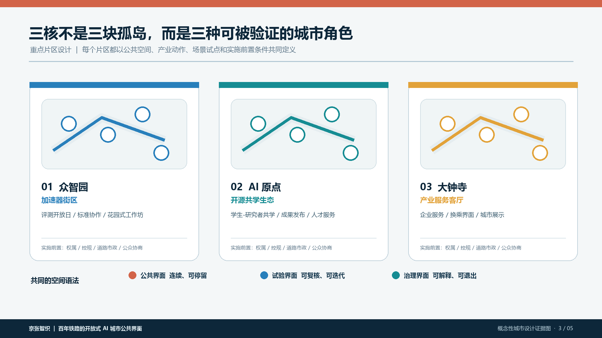
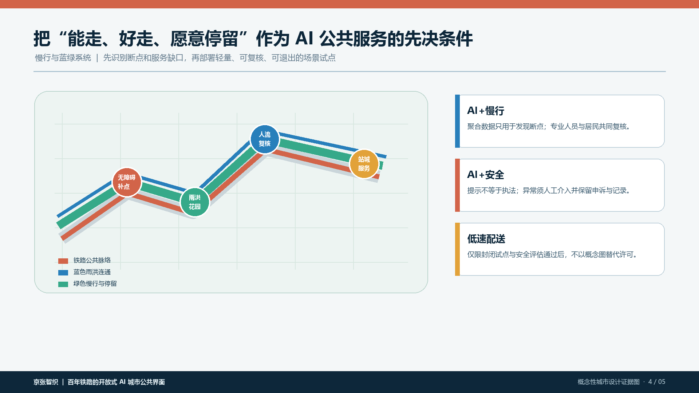

用地分区 / 建筑 / 更新项目
研发、蓝绿、产业服务与社区接口被看作一条可交换的街区剖面；建筑与更新项目只表达概念性角色，不越过权属与控规边界。
不是一条被观看的遗产走廊，而是一条可以步行、停留、学习、协作，并持续接受公众审视的 AI 城市公共界面。

以京张铁路的线性记忆为起点，三核分别承接创新加速、开源共学和产业服务。图纸用同一套色彩、路径与证据边界组织空间叙事，避免把“AI”做成脱离街道的标签。
红色是铁路公共脉络，绿色是慢行与停留，蓝色是雨洪连通；三条线在三核相遇，形成可达、可理解、可复核的日常界面。

研发、蓝绿、产业服务与社区接口被看作一条可交换的街区剖面；建筑与更新项目只表达概念性角色，不越过权属与控规边界。

每个重点区域同时呈现公共界面、产业动作、场景试点与实施前置条件，让图纸从“位置说明”变为“行动框架”。
交通慢行与蓝绿公共空间不是景观附属项，而是 AI 服务的物理前提：断点先被识别，改造先被复核，试点必须可退出。

AI 场景：评测开放日、标准协作、花园式工作坊。
重点：让技术验证拥有对公众开放的界面。
AI 场景：学生-研究者共学、成果发布、人才服务。
重点：让开源转化成为可以进入的街区日常。
AI 场景：企业服务、无障碍换乘、城市展示。
重点：让产业服务回到可达的城市客厅。
统筹研究范围、总体设计范围与重点区域在同一叙事中递进，支撑空间尺度的可读性。
用地分区、建筑、更新项目与交通慢行、蓝绿公共空间共同构成概念性空间系统。
场景保留人工复核和退出机制；任务覆盖、自检状态与假设以矩阵、self_check.json、assumptions.json 为准。